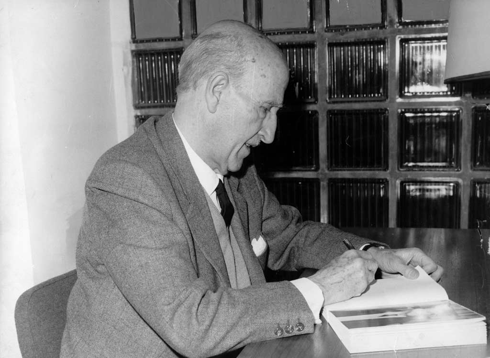
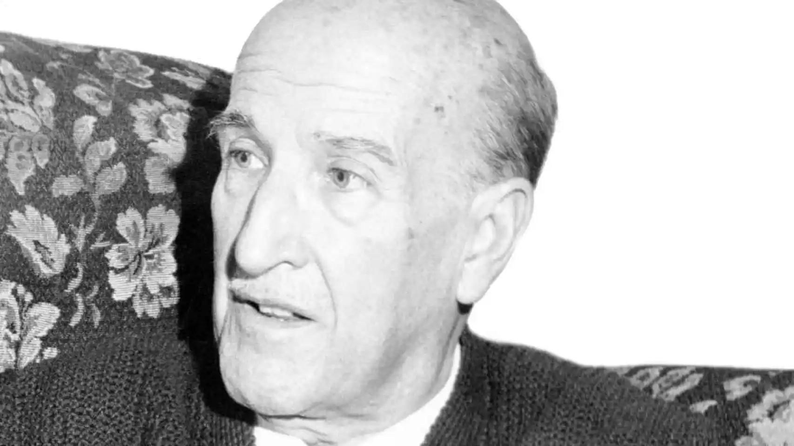

Vicente Aleixandre fue un reconocido poeta español, nacido el 26 de abril de 1898 en Sevilla y fallecido el 14 de diciembre de 1984 en Madrid. Fue una figura destacada de la Generación del 27, un grupo de escritores españoles que revolucionaron la literatura y el arte en España durante la primera mitad del siglo XX.
Aleixandre fue galardonado con el Premio Nobel de Literatura en 1977, en reconocimiento a su obra poética profundamente original y su contribución a la literatura española. Su poesía se caracteriza por una exploración de temas como el amor, la soledad, la muerte y la búsqueda de la identidad humana, a menudo a través de un lenguaje simbólico y surrealista.
Algunas de sus obras más conocidas incluyen "La destrucción o el amor", "Sombra del paraíso" y "Poemas de la consumación". Aleixandre es recordado como uno de los grandes poetas españoles del siglo XX y su legado literario sigue siendo admirado y estudiado en todo el mundo.
 VOLVER A LA PAGINA PRINCIPALNADIE
Nadie. Nadie en el aire, nadie en el valle y en la montaña. Nadie que me abra su ventana al final del día. Nadie. Solo en la alta noche y en su infinita estancia, nadie.